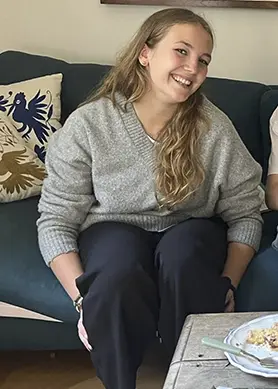
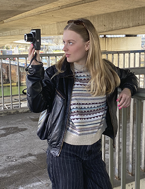
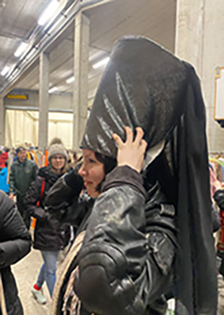

Wir von Retro & Rare haben es uns zur Aufgabe gemacht, alten Gegenständen noch eine Chance zu geben. Auf dieser Website können sie sehen, wie wir ungeliebten Sachen ein neues Leben geben und sie zum neuen Hit machen.
Unser Antiquariat haben wir im Jahre 2006 eröffnet, da wir eine Leidenschaft für alte Bücher und ähnliches haben. Wir sind überzeugt davon, dass die alten Gegenstände noch einmal ein neues zuhause finden werden und arbeiten deswegen diese auf und bieten sie bei uns im Laden zu fairen Preisen an.
Nachhaltigkeit ist uns besonders wichtig und supporten das Motto: Weitergeben statt wegwerfen. Wir glauben, dass Bücher von Natur aus nachhaltig sind und dass sie nicht nur für den Moment gemacht sind, sondern für die Ewigkeit. Als Antiquariat, arbeiten wir mit dem was bereits exisiert. Dadurch, dass wir die Bücher und Gegenstände bewahren, aufarbeiten und weitergeben, verlängern wir ihren Lebenszyklus.
Alles was wir verkaufen, wird vorher sorgfältig geprüft und wenn notwendig, repariert. Sie können sich also sicher sein, dass alles was sie bei uns kaufen, von bester Qualität ist.
DAS TEAM:
Wir sind ein eingespieltes Team, dass sie gerne bei jeglichen Fragen unterstuetzt.

Inhaberin: Madlenka von Ketteler
Alter: 56 Jahre
Lieblingsstueck: Der Globus
Madlenka führt das Antiquariat seit über dreissig Jahren und kennt fast jedes Buch im Laden, als hätte sie es selbst geschrieben. Sie spricht leise, aber bestimmt und traegt meist dunkle Strickjacken und hat die Angewohnheit, beim Nachdenken mit dem Finger über Buchrücken zu fahren. Für sie sind ihre Schmuckstücke keine Ware, sondern Zeitzeugen. Sie entscheidet instinktiv, wer ein Buch oder Gegenstand verdient und überrascht Kund:innen gelegentlich damit, ihnen genau das richtige Werk kommentarlos in die Hand zu drücken.

Verkaeuferin: Floé Schwannauer
Alter: 63 Jahre
Lieblingsstück: Die alte Küchenwaage
Floé ist bei uns schon seit Anfang an mit dabei und ohne sie würde der Laden kaum laufen. Sie weiss genau wo sich welches Teil befindet und sogar wann und wo wir es her haben. Sie kann zu jedem Stück die Geschichte erzählen. Sie ist das organisatorische Rückgrat des Antiquariats. Sie liebt Ordnung, handgeschriebene Karteikarten und weiß genau, welche Erstausgabe in welchem Regal steht. Ihre Leidenschaft gilt Reiseberichten und vergessenen Autorinnen des 19. Jahrhunderts. Nach außen wirkt sie nüchtern und sachlich, doch wenn jemand echtes Interesse zeigt, beginnt sie mit leuchtenden Augen von Büchern zu erzählen, die kaum noch jemand kennt.
Verkaeuferin: Svea Vorberg
Alter: 35 Jahre
Lieblingsstück: Die Taschenuhr
Svea kam eigentlich nur für ein paar Monate doch jetzt ist sie schon seit fünf Jahren geblieben. Sie bringt frischen Wind in den Laden, liest experimentelle Literatur und Lyrik und betreut den kleinen Social-Media-Auftritt des Antiquariats. Ihr Stil ist eine Mischung aus Secondhand und Gegenwartskunst. Sie liebt es, Stammkund:innen neue, unerwartete Buchempfehlungen zu geben und Diskussionen ueber Texte anzustoßen.

Auszubildene: Nele Zöllner
Alter: 21 Jahre
Lieblingsstck: Das Grammophon
Nele ist neu, neugierig und noch etwas ehrfürchtig gegenüber den hohen Regalen. Sie macht ihre Ausbildung zur Buchhändlerin und entdeckt gerade erst die Welt der alten Bücher. Besonders fasziniert ist sie von handschriftlichen Widmungen und vergessenen Notizen zwischen den Seiten. Oft stellt sie viele Fragen, manchmal zu viele, aber ihre Begeisterung ist ansteckend und erinnert die anderen daran, warum sie diesen Ort lieben.